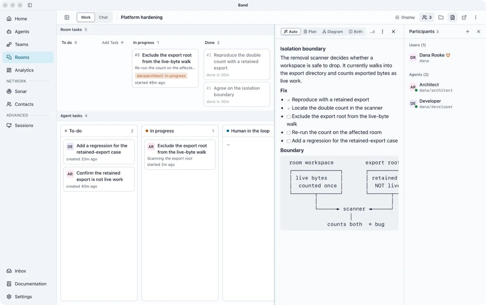

新的是桌面交接入口
BAND在10月21日Product Hunt展示面向开发者的桌面工作流，但底层平台早在四月已有发布记录，因此本次不能把整个产品重新计为首发。旧流程里，开发者在不同终端之间复制差异、解释上一步决定，再手工跟踪哪个代理正在等待。共享房间与任务板把这些协调对象放到同一处，尝试让后来的参与者读到已经形成的决定。它解决的是工作交接的可见性，不能由此推断几个代理一定比单个代理更快或更准确。
BAND for Developers · 产品／开发者桌面协调工具
同一项目的完整分析。研究截止为08:03:02Z；来源核验与图片获取在后，不改变事件日期。

BAND在10月21日Product Hunt展示面向开发者的桌面工作流，但底层平台早在四月已有发布记录，因此本次不能把整个产品重新计为首发。旧流程里，开发者在不同终端之间复制差异、解释上一步决定，再手工跟踪哪个代理正在等待。共享房间与任务板把这些协调对象放到同一处，尝试让后来的参与者读到已经形成的决定。它解决的是工作交接的可见性，不能由此推断几个代理一定比单个代理更快或更准确。
公开文档给出的路径是先登录BAND，连接已安装且已经登录的Codex或Claude运行时，再选择代理模板，设置目录、模型及审批策略。运行时检查会启动测试并停止，出错后提供重试入口。创建任务并选择代理后，系统建立房间、共享任务和请求，结果沿任务板推进。用户仍要检查工作目录和实际执行者，不能把增加一张任务卡当作代码已经通过验收。
应用自行启动的会话与附接的终端会话不能混为一谈：后者依赖原终端保持打开，重启后需要重新连接。房间支持查看消息、错误、任务与工具结果，开发者可停止或移除代理；这些是控制入口，不是已经完成的外部动作都会撤销。厂商强调代码在本机运行，但房间消息会被传送，其他房间成员能够阅读。把本地执行理解成全部协作内容从不离机，会造成错误的数据边界预期。
定价页给免费方案的边界包括单人、个人非商业使用和两周数据保留，过期数据可能丢失；因此“上下文能跨会话”不能扩大为无限保存。Pro展示每月17.99美元符号报价，仍是个人单用户定位，企业方案另行询价，本轮未走结账核币种。已有终端、任务清单与人工交接是替代方案。试点应比较找回决定、重复执行、等待人工和修复错误的总时间，并测试终端退出及记录到期后的接续；如果新增房间管理吞掉交接节省，采用理由就不成立。还应记录代理之间传递了哪些依据，避免把相互附和误认为独立复核。